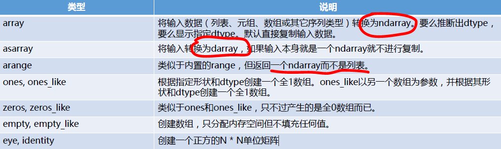

基本功能
• 快速高效的多维数组对象ndarray
• 用于对数组执行元素级计算以及直接对数组执行数学运算的函数
• 用于读写硬盘上基于数组的数据集的工具
• 线性代数运算、傅里叶变换，以及随机数生成
• 用于将C、C++、Fortran代码集成到Python的工具
• 除了为Python提供快速的数组处理能力，NumPy在数据分析方面还有另外一
个主要作用，即作为在算法之间传递数据的容器。
define our features and labels ：
X = np.array(df.drop(['label'], 1))
y = np.array(df['label'])
Numpy之文件存取：
Numpy可以将数组保存至二进制文件、文本文件，同时支持将多个数组保存至一个文件中。
1. np.tofile() & np.fromfile()
import numpy as np
import os
os.chdir("d:\\")
a = np.arange(0,12)
a.reshape(3,4)
array([[ 0, 1, 2, 3],
[ 4, 5, 6, 7],
[ 8, 9, 10, 11]])
a.tofile("a.bin") #保存至a.bin
b = np.fromfile("a.bin", dtype=np.int32) #从文件中加载数组，错误的dtype会导致错误的结果
2. np.save() & np.load() & np.savez()
load()和save()用Numpy专用的二进制格式保存数据，它们会自动处理元素类型和形状等信息。savez()提供了将多个数组存储至一个文件的能力，调用load()方法返回的对象，可以使用数组名对各个数组进行读取。
np.save("a.npy", a.reshape(3,4))
c = np.load("a.npy")
c
array([[ 0, 1, 2, 3],
[ 4, 5, 6, 7],
[ 8, 9, 10, 11]])
3. savetxt() & loadtxt()
数组创建函数

# -*- coding: utf-8 -*-
import numpy as np
print('使用普通一维数组生成Numpy一维数组')
data = [6,7.5,8,0,1]
arr = np.array(data)
print(arr)
print('打印元素类型')
print(arr.dtype)
print('使用普通二维数组生成NumPy二维数组')
data = [[1, 2, 3, 4], [5, 6, 7, 8]]
arr = np.array(data)
print(arr)
print('打印数组维度')
print(arr.shape)
print('使用zeros/empty')
print(np.zeros(10) # 生成包含10个0的一维数组
print(np.zeros((3, 6)) # 生成3*6的二维数组
print(np.empty((2, 3, 2))# 生成2*3*2的三维数组，所有元素未初始化。
print('使用arrange生成连续元素')
print(np.arange(15)) # [0, 1, 2, ..., 14]
NumPy的ndarray NumPy数据类型


ndarray 数组和标量之间的运算
• 不用编写循环即可对数据执行批量运算
• 大小相等的数组之间的任何算术运算都会将运算应用到元素级
• 数组与标量的算术运算也会将那个标量值传播到各个元素
# -*- coding: utf-8 -*-
import numpy as np
# 数组乘法／减法，对应元素相乘／相减。
arr = np.array([[1.0, 2.0, 3.0], [4., 5., 6.]])
print (arr * arr)
print(arr - arr)
# 标量操作作用在数组的每个元素上
arr = np.array([[1.0, 2.0, 3.0], [4., 5., 6.]])
print 1 / arr
print arr ** 0.5 # 开根号

ndarray 基本的索引和切片
• 索引原理
• 切片原理
import numpy as np
# 通过索引访问二维数组某一行或某个元素
arr = np.array([[1, 2, 3], [4, 5, 6], [7, 8, 9]])
print(arr[2])
print(arr[0][2])
print(arr[0,2])
print()
# 对更高维数组的访问和操作
arr = np.array([[1, 2, 3], [4, 5, 6]], [[7, 8, 9], [10, 11, 12]]])
print(arr[0]) # 结果是个2维数组
print(arr[1, 0]) # 结果是个2维数组
out_values = arr[0].copy() # 复制arr[0]的值
arr[0] = 42 # 把arr[0]所有的元素都设置为同一个值
print(arr)
print()
print ('使用切片访问和操作数组')
arr = np.array([1, 2, 3, 4, 5, 6, 7, 8, 9, 10])
print (arr[1:6]) # 打印元素arr[1]到arr[5]
arr = np.array([[1, 2, 3], [4, 5, 6], [7, 8, 9]])
print (arr[:2]) # 打印第1、2行
print (arr[:2, 1:]) # 打印第1、2行，第2、3列
print (arr[:, :1]) # 打印第一列的所有元素
arr[:2, 1:] = 0 # 第1、2行，第2、3列的元素设置为0
print (arr)


ndarray 布尔型索引
• 布尔型数组的长度必须跟被索引的轴长度一致。
• 可以将布尔型数组跟切片、整数（或整数序列）混合使用
# -*- coding: utf-8 -*-
import numpy as np
import numpy.random as np_random
print '使用布尔数组作为索引'
name_arr = np.array(['Bob', 'Joe', 'Will', 'Bob', 'Will', 'Joe', 'Joe'])
rnd_arr = np_random.randn(7, 4) # 随机7*4数组
print (rnd_arr)
print (name_arr == 'Bob') # 返回布尔数组，元素等于'Bob'为True，否则False。
print (rnd_arr[name_arr == 'Bob']) # 利用布尔数组选择行
print (rnd_arr[name_arr == 'Bob', :2]) # 增加限制打印列的范围
print (rnd_arr[-(name_arr == 'Bob')]) # 对布尔数组的内容取反
mask_arr = (name_arr == 'Bob') | (name_arr == 'Will') # 逻辑运算混合结果
print (rnd_arr[mask_arr])
rnd_arr[name_arr != 'Joe'] = 7 # 先布尔数组选择行，然后把每行的元素设置为7。
print (rnd_arr)
ndarray 花式索引
• 花式索引（Fancy indexing）是一个NumPy术语，它指的是利用整数数组进
行索引。
• 一次传入多个索引数组会有一点特别。它返回的是一个一维数组，其中的元素
对应各个索引元组。
# -*- coding: utf-8 -*-
import numpy as np
print 'Fancy Indexing: 使用整数数组作为索引'
arr = np.empty((8, 4))
for i in range(8):
arr[i] = i
print arr
print arr[[4, 3, 0, 6]] # 打印arr[4]、arr[3]、arr[0]和arr[6]。
print arr[[-3, -5, -7]] # 打印arr[3]、arr[5]和arr[-7]行
arr = np.arange(32).reshape((8, 4)) # 通过reshape变换成二维数组
print arr[[1, 5, 7, 2], [0, 3, 1, 2]] # 打印arr[1, 0]、arr[5, 3]，arr[7, 1]和arr[2, 2]
print arr[[1, 5, 7, 2]][:, [0, 3, 1, 2]] # 1572行的0312列
print arr[np.ix_([1, 5, 7, 2], [0, 3, 1, 2])] # 可读性更好的写法
ndarray 数组转置和轴对换
• 一维／二维数组转置
• 高维数组轴对换
# -*- coding: utf-8 -*-
import numpy as np
import numpy.random as np_random
print '转置矩阵'
arr = np.arange(15).reshape((3, 5))
print arr
print arr.T
print
print '转置矩阵做点积'
arr = np_random.randn(6, 3)
print np.dot(arr.T, arr)
print
print '高维矩阵转换'
arr = np.arange(16).reshape((2, 2, 4))
print arr
'''
详细解释：
arr数组的内容为
- a[0][0] = [0, 1, 2, 3]
- a[0][1] = [4, 5, 6, 7]
- a[1][0] = [8, 9, 10, 11]
- a[1][1] = [12, 13, 14, 15]
transpose的参数为坐标，正常顺序为(0, 1, 2, ... , n - 1)，
现在传入的为(1, 0, 2)代表a[x][y][z] = a[y][x][z]，第0个和第1个坐标互换。
- a'[0][0] = a[0][0] = [0, 1, 2, 3]
- a'[0][1] = a[1][0] = [8, 9, 10, 11]
- a'[1][0] = a[0][1] = [4, 5, 6, 7]
- a'[1][1] = a[1][1] = [12, 13, 14, 15]
'''
print arr.transpose((1, 0, 2))
print arr.swapaxes(1, 2) # 直接交换第1和第2个坐标
ndarray 快速的元素级数组函数
- 一元函数


- 二元函数